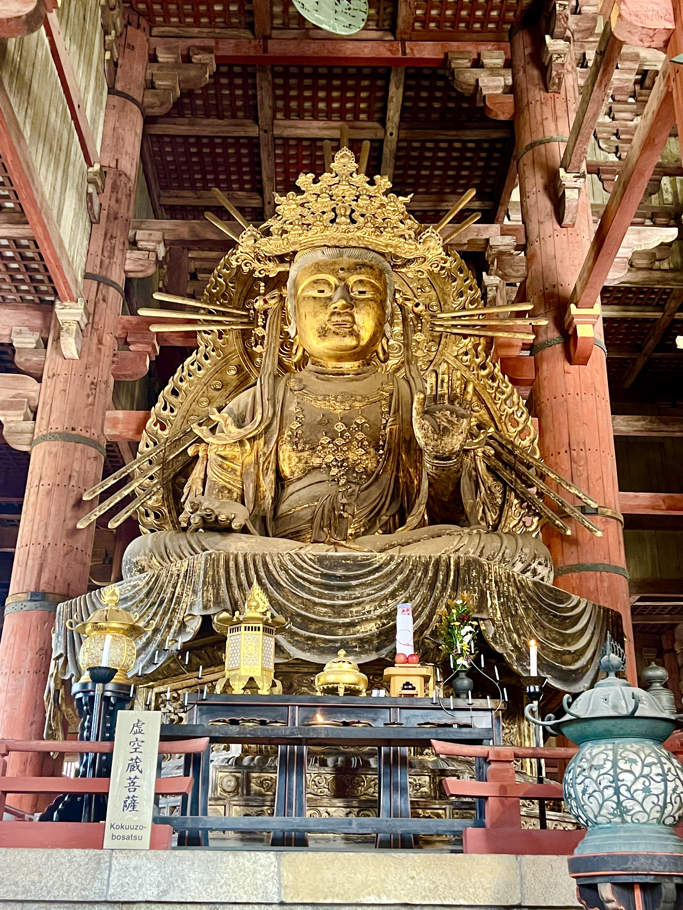
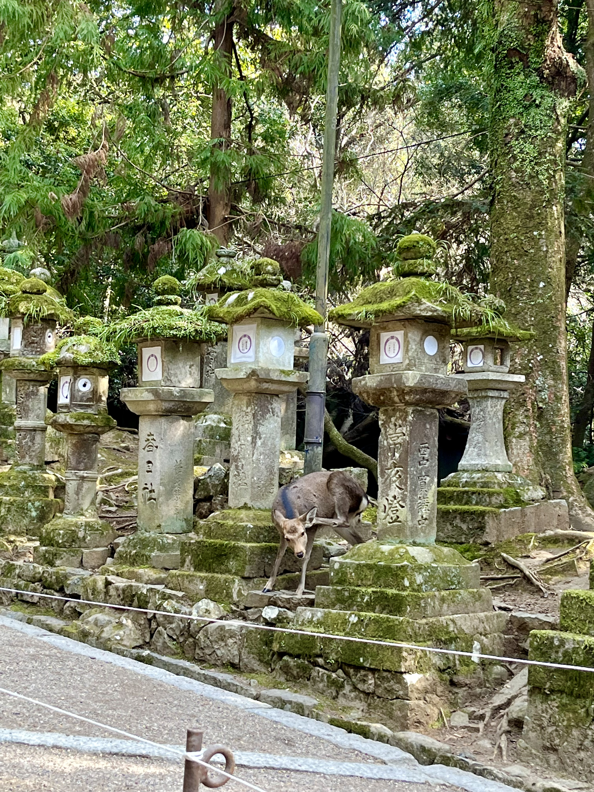
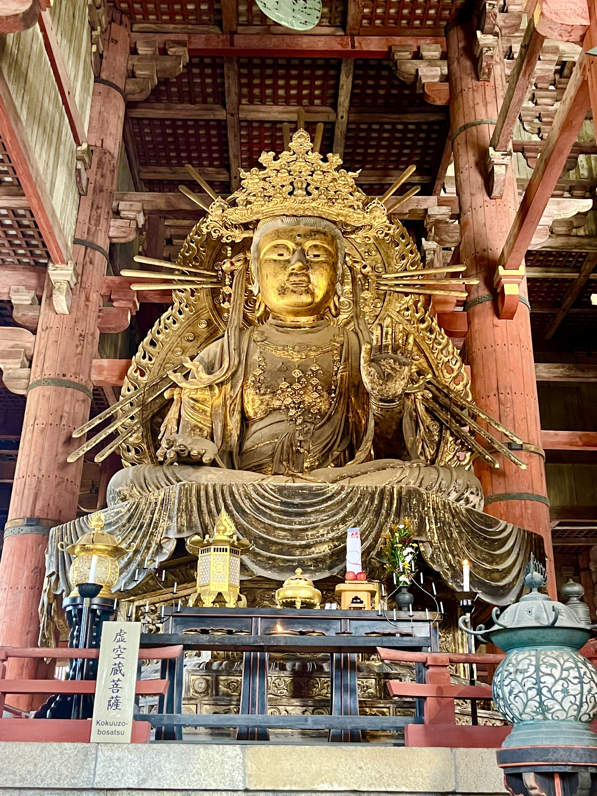
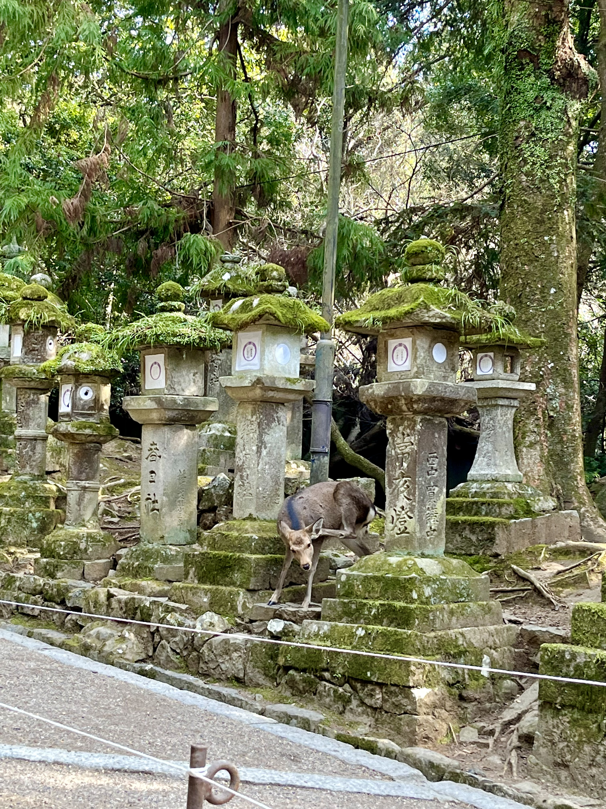

During my visit to Nara, I thoroughly enjoyed observing the deer and other wildlife that roamed freely throughout the city. It was fascinating to see these animals coexisting alongside humans, and to witness their playful antics and interactions with visitors. What struck me as particularly interesting was how little regard they had for the temples and other structures that humans deem sacred. They would casually walk through the temple grounds, graze on the grass, or even nap in the shade of a shrine. It was a reminder that nature and wildlife have their own rhythms and priorities, and that we as humans are simply guests in their world. Overall, my experience in Nara was both humbling and enriching, and I will always remember the joy of observing the wildlife in their natural habitat.